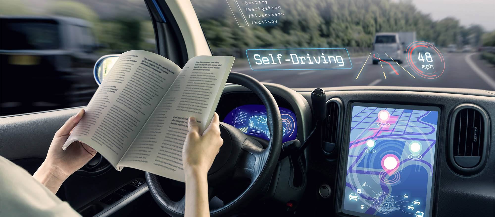

Autonomous Vehicles
What are Autonomous Vehicles?
An autonomous vehicle, commonly referred to as a self-driving car, is a vehicle that is able to be controlled without requiring human input, or in some cases requiring only small amounts of human input. Self-driving cars achieve their autonomous nature by utilizing a range of sensors to visualize the road ahead of them and to navigate the road safely. Sensors such as GPS, sonar, radar and lidar are all used along with odometry and inertial measurement data, to allow for autonomous vehicles to operate without or with little need for a human driver (Driverless Cars Facts, 2021). Autonomous vehicles use these sensors to control their acceleration, deceleration, and steering direction to safely navigate dynamic traffic conditions. Driverless cars use their sensor data to identify pedestrians, other cars and obstacles on the road and are programmed to react accordingly (Driverless Cars Facts, 2021). Creating the technology to allow for self-driving cars to safely react to any and all potential scenarios has proven to be one of the biggest obstacles in the development of the self-driving car industry to date (Autonomous cars: five reasons they still aren't on our roads, 2021). Vehicles with technologies such as keeping the car in its lane and emergency braking are not considered autonomous vehicles as these technologies still require a human driver and are referred to as driver assist technologies (Self-driving car - Wikipedia, 2021).
The development of autonomous vehicles can date back as far as the 1500s, where Leonardo da Vinci created plans for a self-propelled cart that allowed the user to set steering at a predetermined path and then used springs under tension to provide power (WIRED, 2021). Since then, there have been many attempts to create a truly self-driving vehicle and over the years the accumulated technology developments have allowed for some truly groundbreaking innovations.
The first instance of a true self-driving vehicle prototype was designed by Google in 2015 and was operated under Alphabet Inc. (Driverless Cars Facts, 2021). Later that year Tesla introduced their “Autopilot” feature, which allowed drivers to drive without human input while travelling on freeways or highways, this is considered a semi-autonomous feature as it still requires drivers to oversee the driving functions and intervene when necessary (WIRED, 2021).
Current state of the art driverless cars such as the Tesla Model S are at the forefront of autonomous car technology. These vehicles are able to steer, brake and accelerate automatically while driving on highways and freeways, and have features such as auto lane change, summon and auto park (Model S, 2021). These features provide insight into what the future holds in regard to autonomous car technology. Auto lane change enables the vehicle to change lanes automatically by detecting the location of cars around it and then navigate safely between lanes, without the need for driver input. “Summon” allows car owners to retrieve their car from a parking space and have it drive to their location, by giving controls to the vehicle via an app or remote. The auto park feature allows cars to navigate into parking spaces automatically by detecting the cars around it and steering accordingly, aiding with everyone’s much hated “parallel parking”. (Model S, 2021)

(Image source: ADVI What is a driverless car? | ADVI | Autonomous Vehicles, 2021)
Limitations and Drawbacks
While autonomous vehicle technology is rapidly developing, there are many obstacles that stand in the way of further development of autonomous cars such as technology limitations, safety concerns, ethical dilemmas, and law restrictions.
Technology Limitations
Technology limitations include problems such as not having sensors that can effectively map out roadways in extreme conditions such as snow and fog. Radar technology has been used to attempt to provide a solution to this however it is still not a perfect solution and has its drawbacks. (Autonomous cars: five reasons they still aren't on our roads, 2021)
Safety Concerns
Safety is extremely important when it comes to the widespread adoption of self-driving vehicles. Self-driving vehicles need to be able to safely handle any situation they may face on the road, which is a very difficult feat to manage while dealing with unexpected or unpredictable occurrences on the road (The Dangers of Driverless Cars, 2021). Safety concerns raise ethical dilemmas such as, “what should a self-driving car do when it encounters obstacles in the road such as pedestrians?” or “Should a self-driving car sacrifice the driver in order to protect the lives of others?”. These dilemmas and more, are areas of hot debate and differing opinions can slow down the development of new technologies. (Autonomous cars: five reasons they still aren't on our roads, 2021)
Global Laws
Each individual country has different laws and restrictions regarding autonomous vehicles, and this limits the speed of the global adoption of autonomous cars. Law changing processes are slow and can sometimes take years to take effect and as it stands the majority of countries and cities do not allow for the driving of autonomous vehicles on their roads. In locations that do allow it, it is often only on designated roads (thedriverlesscommute.com, 2021). Many countries around the world are currently developing their autonomous vehicle laws so it is only a matter of time before the world truly adopts driverless cars as a driving standard.
California, USA is an example of a location where autonomous cars can legally be used commercially, allowing for services such as automated taxi services and driverless food delivery (California Issues First Autonomous Vehicle Deployment Permit | JD Supra, 2021). Examples such as California, on the forefront of Autonomous vehicle law development, provide an insight as to what the future holds for other countries around the world with developing self-driving car laws and easing restrictions.
Predictions for the future
Self-driving vehicle technology is rapidly developing, and it is predicted that driverless cars will be commonplace by 2030 (Litman, 2021) and by 2035 will account for just under 10% of all vehicles on the road (Driverless Cars Facts, 2021). In order to achieve this, autonomous vehicles must be reliable, safe, and efficient enough to replace most human driving tasks (Litman, 2021). In the next three years the main developments in the Autonomous car industry will be law and restriction easing around the world and technology developments such as better sensors and more advanced machine learning. Autonomous vehicles use machine learning to learn from previous driving data from all vehicles to provide the safest driving experience possible. The more time that passes, the more data that is available to improve autonomous cars in the future (Autonomous cars: five reasons they still aren't on our roads, 2021) meaning that three years from now the safety of autonomous cars will have been improving continuously.
Impact
The development and widespread use of autonomous vehicles will greatly impact the landscape of the automotive industry as we know it. As autonomous cars develop there will be many things that society will benefit from such as decreased road toll, more efficient travelling, elimination of drunk driving, and removing the need for texting/calling while driving. It is estimated that if all cars were to become autonomous there would be approximately 80% less emissions, 40% less congestion on the roads, and 90% less accidents (Driverless Cars Facts, 2021).
While some impacts of autonomous vehicles benefit us, there are some situations where autonomous vehicles have a negative effect such as increased vehicle cost, additional user risk, new security risks, social concerns, and reduced employment (Litman, 2021). Businesses that currently rely on drivers such as taxis, delivery services, and truck drivers will all see reduced need for employees and will make some jobs redundant as driverless vehicle technology develops, causing concern for some workers currently employed in these fields. New security risks are exposed such as the potential for vehicles to be tracked or even hacked and controlled by the hacker. Because of these risks, security is one of the most important things to consider when developing autonomous vehicles. (The Unintended Consequences of Self-Driving Cars, 2021)
Self-driving cars will likely impact everyone in the world greatly in the coming decades, even if the person doesn’t own a self-driving car. Everyone will be forced to share a road with them, meaning that the safety concern applies to anyone who will be using a roadway, not just the autonomous vehicle owners themselves. Traffic laws around the world are required to change as driverless cars become more common (Autonomous cars: five reasons they still aren't on our roads, 2021). This is something that will need to be constantly evolving as the industry develops and regulations will need to be created to govern global standards for autonomous vehicles. Another industry that will be affected because of autonomous cars is in the car insurance industry (The Unintended Consequences of Self-Driving Cars, 2021). Insurers will have to consider who is responsible for accidents caused by driverless cars and how these instances should be handled. There is no question that insurance premiums will eventually fall considerably, however it will only be once full transition to autonomous vehicles has occurred that these savings will be realised. Less accidents and fraud claims will be counterbalanced by the increasing costs of repairing high-tech autonomous vehicles, but as full transition occurs the rate of claims will fall so low that premiums will considerably reduce and automotive insurance will approach obsolescence (Huckstep).
Overall, the world will greatly benefit from autonomous cars in the future and there may even come a time when self-driving vehicles become so common that all cars on the road are autonomous. There are many obstacles to overcome before this can be a reality, but developments are occurring rapidly. These developments will impact the way we know driving today.
Personal Effect
On a personal level, I predict that the increased presence of autonomous vehicles will affect my daily life greatly. I use delivery services numerous times a week and in the future these services may not be operated by humans, meaning that the way I make purchases on a day-to-day basis will change drastically. Additionally, as an owner of a vehicle, I will need to be increasingly more aware of autonomous cars on the road. Knowing that some cars will lack human drivers, means that I will need to understand how autonomous vehicles make decisions in certain situations to avoid a potential accident. Driverless cars do not have human instinct so may react differently than you would expect from a regular driver and must be considered when safely travelling on the roads. In the future I may even own a self-driving vehicle and if this ever happens, I will need to be well aware of the risks and safety concerns associated with them such as knowing what will happen if I was to get into a crash while the car was driving itself. Also knowing how owning a self-driving car affects my car insurance will be an issue that I will need to consider. I imagine that my friends and family will all be affected by autonomous vehicles in a similar way as I am. They will need to consider how to remain safe while sharing the roads with self-driving cars as well as how self-driving cars will impact their day-to-day life by changing the way that they receive many services. Autonomous vehicles are becoming increasingly more popular around the world, and it will impact everyone in society in one way or another, regardless of whether they own an autonomous vehicle or not.